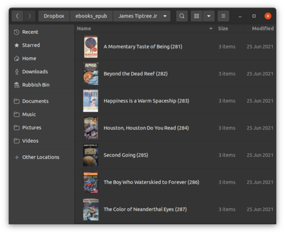

Command-line hacking: Assigning folder icons to directories

While most of my "command-line hacking" articles apply generally to Linux systems, this one is specific to the Gnome desktop. The problem to be solved is the bulk application of folder icons to directories, in the Nautilus file manager. Here is what Nautilus looks like with folder-specific icons assigned:
The documented way to set these icons is to use Nautilus itself -- there is a "Preferences" dialog box which allows a file to be chosen from a graphical file selector. That's fine, for one or two directories; but what if you what to apply folder icons to hundreds of folders in one operation?
Of course, needing to do this pre-supposes that you already have folder icons for all these directories. The usual reason to have them is that you're using some software that writes folder icons. Many audio players do this -- they will extract images from audio files, or download them from sites like Amazon. The Calibre e-book reader does this also -- if an e-book is imported into the library, and the e-book meta-data indicates a cover image, the image is extracted as a file.
The complication is that different applications use different names for
the folder image. Common examples are cover.jpg, folder.jpg, and .folder.jpg. The file type need not necessarily
be JPEG; PNG and GIF files are also common. If icon files are to be
processed automatically, the utility should be able to look for many different
conventional image filenames, without user intervention.
Using "gio" to set icons
To set the folder icon at the command line, you can use the gio
utility, like this:
$ gio set -t string {directory} metadata::custom-icon file://{icon_path}
Both the directory and the icon path must reference absolute filenames in the filesystem.
For the record, the default folder icon can be restored by removing the property:
$ gio set -t unset {directory} metadata::custom-icon
The challenge is to find out which file represents the folder icon, and
call gio in the appropriate way. Incidentally, gio
does not add or modify any files in the selected directory -- it only
affects Gnome meta-data; that means that changes made by running gio typically affect only one user.
Iterating potential folder icons
The gnome-set-folder-icon utility maintains a list of
potential filenames, and potential file extensions, and iterates
both lists, concatenating the elements into a single filename.
As soon as a matching file is found, it is assigned using gio.
NAMES=( cover folder Folder .folder )
EXTS=( .png .jpg .gif )
dir= # Name of directory to process
# Outer loop -- iterate candidate names
for name in "${NAMES[@]}"
do
# Inner loop -- iterate candidate extensions
for ext in "${EXTS[@]}"
do
# Form a candidate filename from the directory, name, and extension
test_icon_path=${dir}/${name}${ext};
if [ -f "$test_icon_path" ]
# Found the icon file... process it
done
done
# If we get here, no folder icon was found
Once the matching folder icon is found it, and the directory name, have to be expanded to full paths, which is simple enough.
full_dir=`realpath "$dir"`
full_icon_path=`realpath "$test_icon_path"`
gio set -t string "$full_dir" "metadata::custom-icon" \
"file://$full_icon_path"
Iterating the command-line arguments
The logic to set the icon file is wrapped up inside a function called
do_directory(),
that takes the directory name as an argument. We would like to be
able to set multiple directory names on the command line, so we
can do something like:
$ gnome-set-folder-icon /path/to/audio/folders/*
That's easily done in a Bash script:
for arg in "$@" do do_directory "$arg" done
Note the double-quotes here, and the liberal use of such quotes throughout the script -- it's very likely that some directories will have spaces in their names. Preventing spaces being treated as command-line argument delimiters is a perennial problem in shell scripting.
Except for a bit of error checking, the code above is the whole impmentation.
Download
However, if you're interested, the full source for
gnome-set-folder-icon is available
from my GitHub repository.